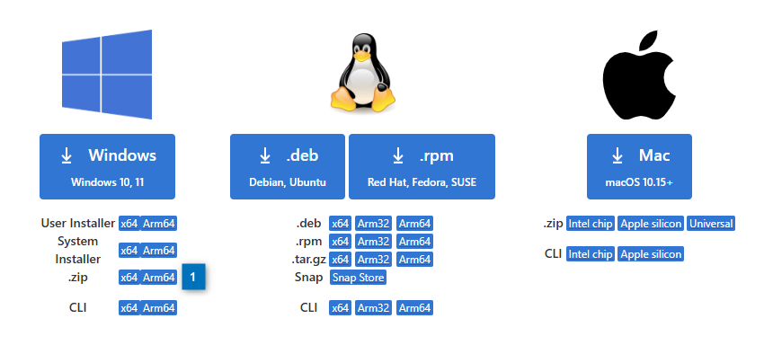
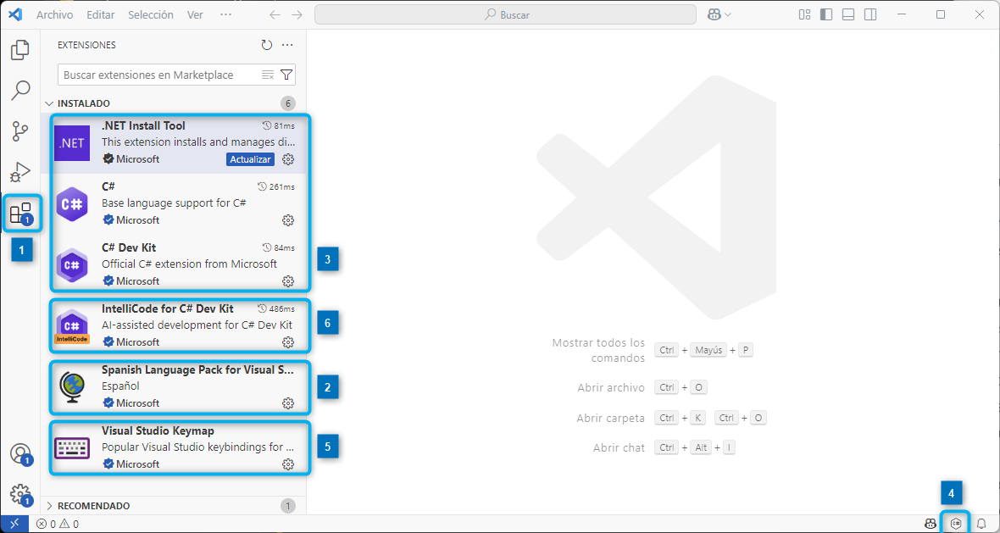
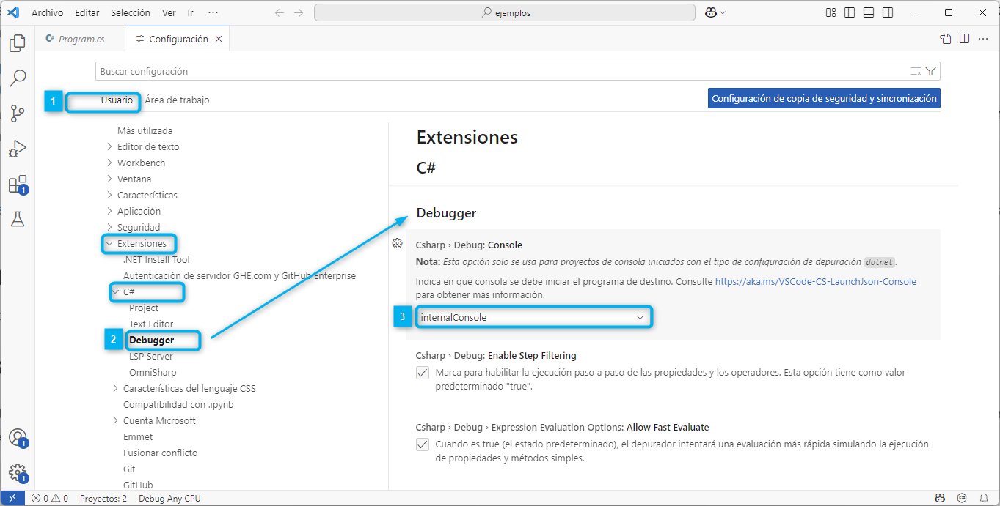
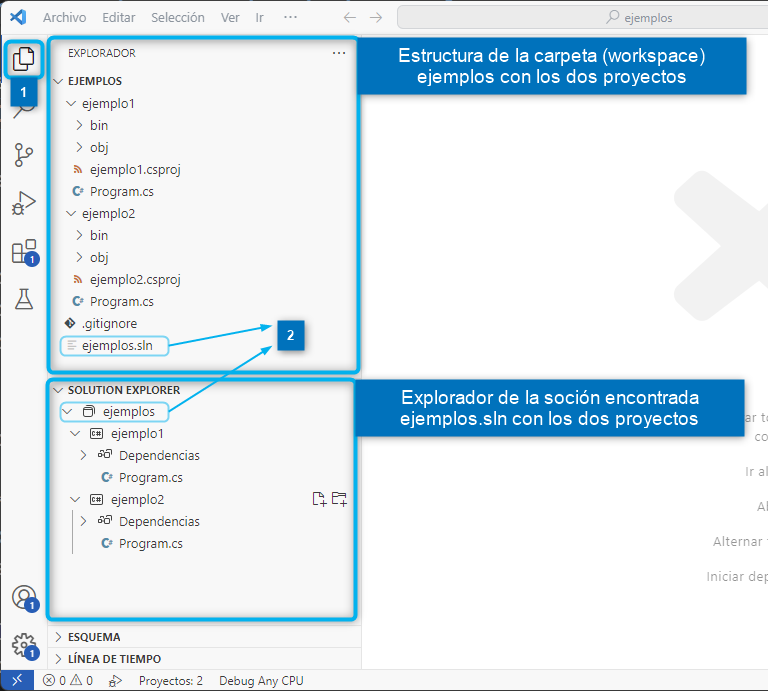

Descargar estos apunte en pdf o html
Además, del .NET Runtime que es lo mínimo necesario para ejecutar una aplicación, dispondremos del Kit de Desarrollo o SDK .NET SDK. Esta trae las herramientas y librerías necesarias para el desarrollo y depuración de aplicaciones.
Importante
Para cuando vayas a descargar esta versión probablemente esté aún una versión de transición cómo la 9.0. Pero en el més de diciembre de 2025 ya estará disponible la versión LTS 10.0 de .NET y C# 14.0 que será la versión estable y recomendada para el desarrollo de aplicaciones y que por tanto utilizaremos a partir de ese momento en el curso.
Si queremos trabajar en cualquier SO e incluso On-Line la mejor opción seria Visual Studio Code pues es un editor Open Source bastante ligero con una gran cantidad de plugins creados por la 'comunidad'. Aunque no es tán potente como un IDE, nos permitirá afrontar una gran cantidad de desarrollos en lenguajes y tecnologías diferentes.
Aunque el uso de un IDE hace transparente para nosotros los comandos y los flujos de trabajo del proceso de desarrollo, siempre es interesante tener claro como son los procesos para así gestionar su automatización a través de herramientas de CI/CD.
Nosotros vamos a utilizar este último y más adelante daremos instrucciones para su instalación y uso
El IDE oficial 'gratuito' sería Visual Studio Community. Este, aunque gratuito, es muy potente y sería la opción adecuada si nos especializamos únicamente en desarrollos con .NET.
Tiene varios inconvenientes:
Otro IDE bastante popular es Rider. Desarrollado por JetBrains, se trata de un IDE multiplataforma disponible también en Linux. Pero con el inconveniente de que no es gratuito.
Puedes descargar Visual Studio Code desde su página oficial.

Como puede ver, podemos descargar para todos los sistemas operativos. En nuestro caso, como estamos en Windows, descargaremos la versión x64. Además, disponemos de diferentes versiones de instalación: Por usuario, para todos los usuarios o portable (ZIP).
Importante
1️⃣ Nosotros vamos a elegir la versión x64 zip o portable, lo cual nos permitirá tener nuestra propia versión del editor sin que interfiera con otras versiones que podamos tener instaladas en el sistema. Además, podremos copiarla en un pendrive y llevarla a cualquier otro equipo sin necesidad de tener permisos de instalación.
Tras descomprimirla tendremos un árbol de carpetas como el del esquema de la derecha donde deberemos crear una carpeta data donde se guardarán los datos de configuración del editor.
Si al ejecutar VS Code detecta la carpeta data, dentro de la misma creara la carpeta user-data donde se guardarán los datos de configuración del editor y la carpeta extensions donde se guardarán las extensiones que instalemos.
Si quisiéramos actualizar la versión de VS Code, solo tendríamos que copiar la nueva versión en la carpeta VSCode-win32-x64... y no perderíamos los datos de configuración ni las extensiones instaladas. También podríamos descomprimir en una nueva ubicación y copiar la carpeta data a la nueva ubicación.
Enlaces
Aquí dispones de un enlace con la documentación oficial sobre la integración con VS Code.
Básicamente deberemos seguir los siguientes pasos:

1️⃣ Abriremos VSCode y pulsaremos Ctrl+Shift+X o haremos clic en el icono de extensiones de la barra lateral izquierda.
2️⃣ Buscaremos e instalaremos la extensión Spanish Language Pack for Visual Studio Code para traducir VSCode al Castellano. Aunque no es necesario, es recomendable para los que no tienen un buen nivel de inglés.
3️⃣ Buscaremos e instalaremos el paquete de extensiones C# Dev Kit Como indica su nombre es una extensión de extensiones. Nos instalará las siguientes extensiones que son las que realmente nos permitirán trabajar con C# en VS Code.
.NET Runtime Install Tool Como su nombre indica nos instalará automáticamente la versión de .NET para que las extensiones funcionen correctamente.
C# Microsoft Anteriormente conocida como OmniSharp, es la extensión oficial del Microsoft para VSCode para el desarrollo de aplicaciones en .NET con C#.
Básicamente, la extensión detectará que tenemos abierta una carpeta (workspace) con un proyecto o solución de .NET y arrancará C# Microsoft automáticamente. Si el Servidor del Lenguaje arrancado correctamente, nos aparecerá en la esquina inferior derecha a el símbolo de C# en un hexágono (4️⃣).
5️⃣ Visual Studio Keymap Me permitirá configurar el teclado como si estuviéramos usando "su hermano mayor" el IDE de Visual Studio.
6️⃣ IntelliCode for C# Dev Kit (Opcional) Nos ayudará a escribir código de forma más rápida y eficiente. Si tenemos algún otro asistente de código mediante IA instalado como GitHub Copilot, Google Gemini, etc. deberemos desactivarlo para que no interfiera con IntelliCode.
Para configurar las diferentes extensiones instaladas, iremos a la opción de menú Archivo → Preferencias → Configuración donde aparecerá la siguiente pantalla...

1️⃣ Si tenemos un proyecto cargado nos aparecerá la pestaña Área de Trabajo, de tal manera, que los cambios de configuración que hagamos afectarán solo a ese proyecto. Si no tenemos ningún proyecto abierto, nos aparecerá solo la pestaña Usuario donde los cambios afectarán a todos los proyectos de C#.
2️⃣ En el apartado Extensiones, del árbol de configuración podremos ver todas las extensiones instaladas y configurarlas a nuestro gusto. En nuestro caso, hemos seleccionado la extensión C# y dentro de la misma las opciones de Debugger.
3️⃣ Vamos a sustituir la opción InternalConsole por IntegratedTerminal. De esta forma, cuando ejecutemos el programa, se abrirá una terminal integrada en la parte inferior de VSCode y no una ventana de consola independiente. Esto nos permitirá depurar de una forma más intuitiva y similar a la ejecución normal.
La gestión de proyectos se hace con la CLI dotnet, así pues para crear un proyecto desde consola usaremos dotnet new y en concreto para crea una aplicación de consola ejecutaremos dotnet new console -n <nombre>
B:\>dotnet new console -n ejemplo La plantilla "Aplicación de consola" se creó correctamente. Procesando acciones posteriores a la creación... Ejecutando "dotnet restore" en C:\ejemplo\ejemplo.csproj... Determinando los proyectos que se van a restaurar... Se ha restaurado C:\ejemplo\ejemplo.csproj (en 77 ms). Restauración realizada correctamente.
Tras ejecutar este comando, se creará un proyecto definido en el fichero ejemplo.csproj donde, si no especificamos la versión de .NET, nos lo creará con la que hemos instalado y el lenguaje será C# con la última versión posible de esa plataforma.
Como podemos ver, para nuestro ejemplo la plataforma de destino es .NET 10 y la versión de C# es la 14 (aunque no lo indica porque es la de defecto para .NET 10)
<Project Sdk="Microsoft.NET.Sdk"> <PropertyGroup> <OutputType>Exe</OutputType> <TargetFramework>net10.0</TargetFramework> <ImplicitUsings>enable</ImplicitUsings> <Nullable>enable</Nullable> </PropertyGroup> </Project>
Si estamos en una versión intermedia como .NET 9, y queremos ver las nuevas funcionalidades del lenguaje el fichero ejemplo.csproj deberemos indicar en la etiqueta <LangVersion> el valor preview para que el compilador use nuevas características del lenguaje que aún no están disponibles en la versión estable de .NET 9.0.
<Project Sdk="Microsoft.NET.Sdk"> <PropertyGroup> <OutputType>Exe</OutputType> <TargetFramework>net9.0</TargetFramework> <ImplicitUsings>enable</ImplicitUsings> <Nullable>enable</Nullable> <LangVersion>preview</LangVersion> </PropertyGroup> </Project>
📌 Nota: Para más información ver la documentación oficial.
Un proyecto debería estar asociado a una solución. Así mismo, una solución podría tener más de un archivo asociado. De hecho, si hubiéramos creado el proyecto de consola con el Visual Studio Community nos crearía por defecto una solución a la que estaría asociado el mismo.
dotnet new sln -n <nombre> crearemos una solución.dotnet sln <nombre>.sln add <nombre>.csproj añadiremos una proyecto a una solución.B:\>cd ejemplo C:\ejemplo>dotnet new sln -n ejemplo The template "Solution File" was created successfully. C:\ejemplo>dotnet sln ejemplo.sln add ejemplo.csproj Se ha agregado el proyecto "ejemplo.csproj" a la solución. C:\ejemplo>dotnet sln list Proyectos --------- ejemplo.csproj
🧠 Recuerda: Todo proyecto debe estar asociado a una solución. Además, podemos tener además más de una proyecto asociado a una solución.
También es posible compilar el proyecto y generar el ensamblado con dotnet build y ejecutar el programa usando dotnet run. Aunque este proceso lo podremos hacer a través de VS Code usando la extensión oficial para C# de Microsoft.
C:\ejemplo>dotnet build
Determining projects to restore...
Todos los proyectos están actualizados para la restauración.
ejemplo -> C:\ejemplo\bin\Debug\net8.0\ejemplo.dll
Compilación correcta.
0 Advertencia(s)
0 Errores
Tiempo transcurrido 00:00:00.64
C:\ejemplo>dotnet run
Hello World!
📌 Nota: Ya veremos más adelante como realizar esta asociación de forma automática al crear un nuevo proyecto desde VS Code.
Podemos tener más de una versión instalada del .NET SDK en nuestro sistema. Para saber cuáles tenemos instaladas y cuál es la que se está usando por defecto, podemos usar el comando dotnet --info. Entre otras cosas nos mostraría la siguiente información.
Fíjate que hablamos del SDK y no del Runtime. Ya que del Runtime podríamos tener muchas más instaladas.
C:\ejemplo>dotnet --info SDK DE .NET: Version: 8.0.301 Commit: 1a0e9c0300 Workload version: 8.0.300-manifests.f6879a9a MSBuild version: 17.10.4+10fbfbf2e ... .NET SDKs installed: 6.0.406 [C:\Program Files\dotnet\sdk] 8.0.301 [C:\Program Files\dotnet\sdk]
Donde nos indica que tenemos las LTS 6 y 8 instaladas y que la que se está usando por defecto es la 8.
Como si no indicamos nada, dotnet usará la versión por defecto. Si queremos usar una versión concreta, deberemos indicarlo al crear el proyecto con el parámetro --framework o -f.
C:\ejemplo>dotnet new console -f "net6.0" -n ejemplo
y dentro de la carpeta del proyecto ejemplo deberemos crear un fichero global.json con la siguiente información.
{
"sdk": {
"version": "6.0.406"
}
}
Este fichero se puede crear con el comando dotnet new globaljson tras crear el proyecto con la versión del SDK especificada.
C:\ejemplo>dotnet new console -f "net6.0" -n ejemplo C:\ejemplo>dotnet new globaljson
Para indicarle que use ese SDK en concreto en lugar de el por defecto para compilar al hacer dotnet build o dotnet run, previamente con dotnet --info deberemos asegurar que la versión concreta que hemos indicado en el global.json está instalada en nuestro sistema. En caso contrario obtendremos un error.
✋ Importante: Deberemos asegurarnos de que durante el curso no tenemos instala la de .NET 10 y si es así deberemos desinstalarla o crear el fichero en la versión 8 con el
global.jsoncorrespondiente.
Lo más simple para abrir un proyecto creado desde la consola, sería abrir o arrastrar a VS Code la carpeta donde se encuentra el proyecto. En nuestro caso C:\ejemplo. Automáticamente nos abrirá el proyecto y la solución si existe. Si no existe, creará una solución con el mismo nombre que el proyecto y añadirá el proyecto a la solución.
Veamos cómo sería el proceso, paso a paso:
Crearemos una carpeta o workspace con el nombre de la solución y que contendrá todos los proyectos. Por ejemplo, C:\ejemplos
Dentro de la carpeta creamos los proyectos desde la consola de comandos.
C:\ejemplos>dotnet new console -n ejemplo1 C:\ejemplos>dotnet new console -n ejemplo2 C:\ejemplos>dotnet new gitignore
Fíjate que hemos ejecutado dotnet new gitignore. Esto, aunque no es necesario, nos creará un fichero .gitignore que nos será útil si en el futuro queremos crear un repositorio de Git y subir la solución a un repositorio de GitHub o GitLab. En él se especifican los ficheros y carpetas de los que no queremos llevar un control de versiones.
💡 Tip: En adelante, vamos a crearlo aunque de momento no sabemos que es Git ni para que sirve. Pero es una buena práctica y nos evitará problemas en el futuro.
Abrimos la carpeta C:\ejemplos desde VS Code. En este caso, como antes al no existir una solución, la creará y añadirá los proyectos a la misma de forma automática.
Si pulsamos en el explorador 1️⃣. Además del explorador de archivos normal, en la parte de arriba, que nos mostrará la jerarquía de carpetas y ficheros. Al encontrar la solución ejemplos.sln (2️⃣) nos abajo una pestaña depletable denominada EXPLORADOR DE SOLUCIONES (SOLUTION EXPLORER) que nos permitirá crear soluciones y proyectos de forma sencilla sin usar el CLI., así como añadir referencias a otros proyectos y librerías como veremos más adelante en el curso.

✋ Importante: Además, con la combinación de teclas
Ctrl + Shift + P, VSCode nos ofrecerá ejecutar comandos y acciones de las extensiones instaladas. Si escribimos.NETnos ofrecerá todas la opciones posibles de la extensión según el contexto.
Ctrl + Shift + P → .NET: New Project
Este comando creará un nuevo proyecto de C# sin necesidad de usar el CLI. Si no existe una solución en el espacio de trabajo, nos creará una nueva solución y nos añadirá el proyecto al mismo automáticamente. Pero si ya existe una solución, nos preguntará si queremos añadir el proyecto a la solución existente.
Ctrl + Shift + P → .NET: Abrir Solución Abrirá una solución ya existente.
Ctrl + Shift + P → .NET: Cerrar Solución Cerrará una de las soluciones abiertas.
Además, cuando tengamos una solución ya abierta en el explorador de soluciones, al pulsar Ctrl + Shift + P nos ofrecerá nuevos comandos tales como:
.NET: Compilar todas las soluciones abiertas..NET: Recompilar todas las soluciones abiertas..NET: Limpiar todas las soluciones abiertas.📌 Nota: Para no alargar en exceso el tema, recuerda que en la integración con VS Code tienes una guía actualizada por Microsoft sobre el uso de la extensión de C# para VS Code. Además, en clase veremos profundizaremos en el entrono y en cómo realizar la ejecución y depuración de aplicaciones.
A lo largo del curso se darán diferentes tips de uso del teclado y atajos para refactorizar.
Puesto que hemos instalado "Visual Studio Keymap". Se nos habrán configurados automáticamente las siguientes extensiones de teclado.
💡 Tip: Es importantísimo que empieces a utilizarla ya si quieres coger cierta soltura desarrollando código. Tarde o temprano lo tendrás que hacer.
| Acción | Teclado | Acción | Teclado |
|---|---|---|---|
| Salta letra | →/← |
Salta palabra | Ctrl+→ o Ctrl+← |
| Salta al inicio | Ctrl+Inicio |
Salta al final | Ctrl+Fin |
| Selecciona letra | Shift+→ o Shift+← |
Selecciona palabra | Shift+Ctrl+→ o Shift+Ctrl+← |
| Selecciona línea | Inicio, Shift+↓ |
Selecciona columna | Shift+Alt+↓ y/o Ctrl+Alt+→ |
| Selecciona hasta inicio | Ctrl+Shift+Inicio |
Selecciona todo | Ctrl+A o Ctrl+Inicio, Ctrl+Shift+Fin |
| Selecciona hasta fin | Ctrl+Shift+Fin |
Copiar linea o selección | Ctrl+C |
| Mover línea o selección actual | Alt+↑ o Alt+↓ |
Pegar | Ctrl+V |
| Cortar linea o selección | Ctrl+X |
Duplica selección | Ctrl+D |
| Pegar sin formato | Ctrl+Shift+V |
Des-tabula selección | Shft+Tab |
| Tabula selección | Tab |
Buscar en todo | Ctrl+Shift+F |
| Buscar | Ctrl+F |
Buscar y Reemplazar | Ctrl+H |
| Buscar siguiente | F3 |
Formatea Código | Ctrl+K, Ctrl+D |
| Buscar y Reemplazar en todo | Ctrl+Shift+H |
Des-comenta Selección | Ctrl+K, Ctrl+U |
| Comenta Selección | Ctrl+K, Ctrl+C |
Ejecuta sin depurar | Ctrl+F5 |
| Ir a siguiente error o aviso | F8 |
Re-nombra identificador | Ctrl+R, Ctrl+R |
| Ejecuta depurando | F5 |
Ir a la definición | F12 |
| Ir a la declaración | Ctrl+F12 |
Ver Información sobrecargas | Ctrl+shift+Space |
| Ver Sugerencia contextual | Ctrl+Space |
Ver Refactorización contextual | Ctrl+. |
| Muestra información in-line | Ctrl+K, Ctrl+I |